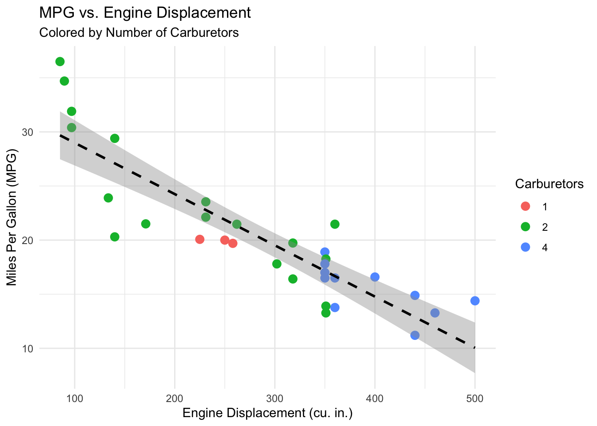

We fit a multiple linear regression model relating gasoline mileage y (miles per gallon) to engine displacement x1 and the number of carburetor barrels x6.
We constructed the analysis-of-variance table, tested for significance of regression and defined appropriate hypotheses for this test.
Call:
lm(formula = y ~ x1 + x6, data = dat)
Residuals:
Min 1Q Median 3Q Max
-7.0623 -1.6687 -0.3628 1.6221 6.2305
Coefficients:
Estimate Std. Error t value Pr(>|t|)
(Intercept) 32.884551 1.535408 21.417 < 2e-16 ***
x1 -0.053148 0.006137 -8.660 1.55e-09 ***
x6 0.959223 0.670277 1.431 0.163
---
Signif. codes: 0 '***' 0.001 '**' 0.01 '*' 0.05 '.' 0.1 ' ' 1
Residual standard error: 3.013 on 29 degrees of freedom
Multiple R-squared: 0.7873, Adjusted R-squared: 0.7726
F-statistic: 53.67 on 2 and 29 DF, p-value: 1.79e-10
# Generate ANOVA tableanova(model_1)
Analysis of Variance Table
Response: y
Df Sum Sq Mean Sq F value Pr(>F)
x1 1 955.72 955.72 105.290 3.666e-11 ***
x6 1 18.59 18.59 2.048 0.1631
Residuals 29 263.23 9.08
---
Signif. codes: 0 '***' 0.001 '**' 0.01 '*' 0.05 '.' 0.1 ' ' 1
For the significance of regression, we want to summarize the conclusions via the overall fit, using the F-statistic result from the summary of the overall model.
Hypotheses:
Neither predictors have any linear relationship with gasoline milage. \[H_0: \beta_1 = \beta_6 = 0\]
At least 1 predictor is useful for predeciting gasoline mileage. \[H_1: \text{ At least one } \beta_j != 0\]
Test Statistic:
“F-statistic: 53.67 on 2 and 29 DF, p-value: 1.79e-10”, from fitting the model, where F = MSR/MSRes = (SSR/(p-1)) / (SSRes)/(n-p)).
F = MSR/MSRes = (974.31/(3-1)) / (263.23)/(32-3)) = approximately 53.65, where p = 3 and n = 32.
Since p-value 1.79e-10 is much smaller than \(\alpha\) = 0.05, we reject the null hypothesis \(H_0\).
Interpretation: There is a statistically significant linear relationship between gasoline mileage (\(y\)) and the combination of engine displacement (\(x_1\)) and carburetor barrels (\(x_6\)).
Miles per Gallon versus Engine Displacement
ggplot(dat, aes(x = x1, y = y)) +geom_point(aes(color =as.factor(x6)), size =3) +geom_smooth(method ="lm", color ="black", linetype ="dashed") +labs(title ="MPG vs. Engine Displacement",subtitle ="Colored by Number of Carburetors",x ="Engine Displacement (cu. in.)",y ="Miles Per Gallon (MPG)",color ="Carburetors") +theme_minimal()
`geom_smooth()` using formula = 'y ~ x'

\(R^2\) and adjusted \(R^2\) of this model
Comparing the \(R^2\) and adjusted \(R^2\) to the simple linear regression model relating to mileage \(y\) to engine displacement \(x_1\). This will tell us how well the model explains the data compared to the simpler model.
Recall: \(R^2\) is the proportion of variance in the response variable that is predictable from the independent variables.
# Extract metrics from the Multiple Linear Regression (MLR) modelr2_mlr <-summary(model_1)$r.squared # 0.7872928adj_r2_mlr <-summary(model_1)$adj.r.squared # 0.7726233# Fit the Simple Linear Regression model (y ~ x1)model_slr <-lm(y ~ x1, data = dat)summary(model_slr)
Call:
lm(formula = y ~ x1, data = dat)
Residuals:
Min 1Q Median 3Q Max
-6.7923 -1.9752 0.0044 1.7677 6.8171
Coefficients:
Estimate Std. Error t value Pr(>|t|)
(Intercept) 33.722677 1.443903 23.36 < 2e-16 ***
x1 -0.047360 0.004695 -10.09 3.74e-11 ***
---
Signif. codes: 0 '***' 0.001 '**' 0.01 '*' 0.05 '.' 0.1 ' ' 1
Residual standard error: 3.065 on 30 degrees of freedom
Multiple R-squared: 0.7723, Adjusted R-squared: 0.7647
F-statistic: 101.7 on 1 and 30 DF, p-value: 3.743e-11
# Extract metrics from the SLR modelr2_slr <-summary(model_slr)$r.squared # 0.7722712adj_r2_slr <-summary(model_slr)$adj.r.squared # 0.7646803# Multiple Linear Regression Modelcat("R-Squared for MLR: ", r2_mlr, "\n")
R-Squared for MLR: 0.7872928
cat("Adjusted R-Squared for MLR: ", adj_r2_mlr, "\n")
Adjusted R-Squared for MLR: 0.7726233
# Simple Linear Regression Modelcat("R-Squared for SLR: ", r2_slr, "\n")
R-Squared for SLR: 0.7722712
cat("Adjusted R-Squared for SLR: ", adj_r2_slr)
Adjusted R-Squared for SLR: 0.7646803
Results:
Multiple Linear Regression (\(x_1 + x_6\)) :
\(R^2\) of MLR: 0.7872928
Adjusted \(R^2\) of MLR: 0.7726233
Simple Linear Regression (\(x_1\) only) :
\(R^2\) of SLR: 0.7722712
Adjusted \(R^2\) of SLR: 0.7646803
\(R^2\) always increases or stays the same when we add more variables
Coefficient of Determination \(R^2\) measures the proportion of variance in the response (\(y\)) explained by the predictors. \(R^2\) = 1 - \(SS_{Res} / SS_{T}\)
Adjusted \(R^2\) penalizes the model for adding unnecessary predictors.
It accounts for the degrees of freedom (n-p), Adjusted \(R^2\) = 1 - \((SS_{Res}/(n-p)) / (SS_{T}/(n-1))\)
Interpretation:
The MLR model (\(R^2\) = approx. 78.73%) explains slightly more variation than the SLR model (\(R^2\) = approx. 77.23%).
The adjusted metric \(R^2\) also increases from SLR’s approx. 76.47% to MLR’s approx. 77.26%.
Thus, adding carburetor barrels (\(x_6\)) to the model provided a VERY small improvement in fit, but only a tiny amount. Engine displacement (\(x_1\)) accounts for the vast majority of the predictive power.
Predictor adds no value to model given all other predictors are already included \[H0: \beta_j = 0.\]
Predictor is significant. \[Ha: \beta_j != 0.\]
Results:
For \(x_1\): * t-test = -8.660425 * p-value = 1.549965e-09
Since p = 1.549965e-09 which is smaller than \(\alpha\) = 0.05, we reject the null hypothesis #H_0$: \(\beta\)j = 0.
Engine displacement makes a significant contribution to the modeleven when carburetor barrels (\(x_6\)) are included. There is strongevidence that engine displacement is associated with gasoline mileage.
For \(x_6\): * t-test = 1.431 * p-value = 1.630948e-01
Since p = 1.630948e-01 > \(\alpha\) = 0.05, we FAIL to reject \(H_0\).
The number of carburetor barrels does not make a statistically significant contribution to the model GIVEN that engine displacement is already included.
Interpretation:
Despite the overall model being significant, only engine displacement is a significant individual predictor. Carburetor barrels appears to be redundant with the presence of engine displacement.
Confidence vs. Prediction Intervals
Finding a 95% CI for \(\beta_1\).
# 95% CI for x1, using confint() for accuracy and simplicityconfint(model_1, "x1", level =0.95)
2.5 % 97.5 %
x1 -0.06569892 -0.04059641
100(1-\(\alpha\)) is the confidence interval for regression coefficient \(\beta_j\) given by:
\(\beta_hat_j\) ± t_(n-p),\(\alpha\)/2 multiplied by “estimate standard error” or (ese) of \(\beta_hat_j\) in our summary:
\(\beta_hat_j\) = -0.05314767
ese(\(\beta_hat_j\)) = 0.006136843
Critical value from t-distribution with df n-p = 32 - 3 = 29
\(\alpha\)/2 = 0.025 is approx. 2.045
Result:
Lower Bound: -0.06569892 Upper Bound: -0.04059641
Interpretation:
We are 95% confident that the true slope for \(x_1\) lies between -0.06569957 and -0.04059643
Since the entire interval is negative, we are statistically certain that larger engines are associated with lower gas mileage.
For every 1 cubic inch increase in engine displacement, we estimate the car’s fuel efficiency will drop between 0.041 and 0.066 miles per gallon, holding the numbers of carburetors constant.
t-statistics for predicting gas mileage
t-statistics for: * \(H_0: \beta_1 = 0\), number of carburetors and engine displacement are redundant.
\(H_0: \beta_6 = 0\), they provide significant predictions for mileage.
We want to test if a coefficient = 0, \(t_0 = (beta_hat_j)\) / (ese(\(beta_hat_j\)))
t-distribution with n-p degrees of freedom under \(H_0\).
We reject the \(H_0\) if |\(t_0\)| > \(t_{(crit(n-p,\alpha / 2))}\)
Recall, for \(\alpha\) = 0.05 and df = 20, the critical value is approcimately 2.045.
# Extracting coefficients table to see t-valuescoef_summary <-summary(model_1)$coefficientscoef_summary
# Get specific t-values for x1 and x6t_beta1 <- coef_summary["x1", "t value"] # [1] -8.660425t_beta6 <- coef_summary["x6", "t value"] # [1] 1.431084# Or simply read from coefficients summary table# degrees of freedom for critical valuedf_res <-summary(model_1)$df[2] # [1] 29# t-statistic for x1:cat("T-Statistic for x1: ", t_beta1, "\n") # [1] -8.660425
T-Statistic for x1: -8.660425
# t-statistic for x6:cat("T-Statistic for x6: ", t_beta6, "\n") # [1] 1.431084
T-Statistic for x6: 1.431084
# degrees of freedom:cat("Degrees of Freedom: ", df_res) # [1] 29
Degrees of Freedom: 29
Results:
Displacement:
For \(\beta_1\) the t-value = |-8.660425| = 8.660425, thus, we reject \(H_0\) since 8.660425 > 2.045.
There is statistically significant evidence that engine displacement contributes to the model.
Carburetors:
For \(\beta_6\) = |1.431084| = 1.431084, we FAIL to reject \(H_0\) since 1.431084 is NOT > 2.045.
Interpretation:
There is statistically significant evidence that engine displacement contributes to the model. While there is insufficient evidence to claim thatthe number of carburetor barrels contribute significantly to the model when displacement is already included.
Confidence Interval Example
Finding a 95% Confidence Interval on the mean gasoline mileage when * \(x_1 = 275\) * \(x_6 = 2\)
# Defining the new observation (mean gasoline milage when x1 = 275, x6 = 2)new_car <-data.frame(x1 =275, x6 =2)# 95% CI for Mean Responsepredict(model_1, newdata = new_car, interval ="confidence", level =0.95)
fit lwr upr
1 20.18739 18.87221 21.50257
# Extract the coefficients table to see beta_hat valuescoef_summary <-summary(model_1)$coefficients
Results
The point estimate is approx. 20.19 from the equation:
\[ \hat{y} = \beta_0 - \beta_1(275) + 0.96(2)\]
Lower bound: 18.97221
Upper Bound: 21.50257
They measure the uncertainty in the position of the regression plane (the average) at that specific point.
Interpretation:
We are 95% confident that the true average gasoline mileage for all cars with an engine displacement of 275 cubic inches and 2 carburetor barrels lies between 18.97 and 21.40 Miles per Gallon (\(y\)), a range of 2.43 MPG.
The small gap suggests that we are very sure about that the average mileage of cars with these specs, would be approx. 20.2 Miles Per Gallon, give or take 1.2 MPG.
Prediction Interval Example
Finding a 95% prediction interval for a new observation on gasoline mileage when: * \(x_1 = 275\) * \(x_6 = 2\)
# Residual Standard Errorsigma_hat <-summary(model_1)$sigmasigma_hat
[1] 3.012815
df_res <-summary(model_1)$df[2]df_res
[1] 29
Results:
point estimate: 20.18739Lower Bound: 13.8867Upper Bound: 26.48808
Interpretation:
We are 95% confident that a single specific automobile with 275 cubic inches engine displacement and 2 carburetor barrels will have a gasoline mileage between 13.89 and 26.49 Miles per Gallon, a range of 12.6 MPG.
The large gap in the Prediction Interval compared theConfidence Interval suggests that individual cars arehighly variable. If we buy one specific car, its mileagecould plausibly be as low as 14 or as high as 26 which in itself is a large pool of unit.
While the model is very good at identifying the average behavior,it is not very precise at predicting individual outcomes because there is a lot of random variation, \(\epsilon\), between cars that engine size alone cannot explain.
Model Validation and Out-Of-Sample Performance
Recall:\(SS_{Res}\) measures the error on the data the model was trained on. The model is optimized specifically to minimize this error, “fitting” itself to the specific noise in that dataset.
\(PRESS\) measures the error on data points held out (leave-one-out cross-validation). Because the model hasn’t seen these points during fitting, it cannot overfit to them, resulting in larger errors.
\(PRESS\) residual for point \(i\) is measured by \(e_i\) = \(e_i\) / \(1-h_ii\).
\(e_i\) being the original residual, \(h_ii\) is the leverage of \(i\) which is always between 0 and 1 (and typically > 0).
Since the denominator is less than 1, the \(PRESS\) residual is mathematically guaranteed to be larger in magnitude than the ordinary residual.
Therefore, the sum of squared \(PRESS\) residuals \(PRESS\) will be larger than the sum of squared ordinary residuals \(SS_{Res}\)
We want to find \(SS_T\) and the out-of-sample \(R^2\) using the given PRESS statistic.
model <-lm (model_1)# Residuals and Leverage (hat values)hat_vals <-lm.influence(model)$hathat_vals
# Residualsresiduals <-resid(model)# PRESS Residuals, predictively adjusted residualspressres <-resid(model)/(1-lm.influence(model)$hat) # SSRes, Residual sum of squaresSSRes <-sum(residuals ^2)# PRESS, Predicted Residual Error Sum of SquaresPRESS <-sum(pressres ^2)# Total Sum of Squares, Sum of differences from the mean of ySST <-sum((dat$y -mean(dat$y))^2)# Out of sample $R^2$ (Prediction R-Squared)R2_prediction <-1- (PRESS/SST)# Residual Sum of Squarescat("Residual Sum of Squares (SSRes): ", SSRes, "\n")
Residual Sum of Squares (SSRes): 263.2345
cat("Predicted Residual Error Sum of Squares (PRESS): ", PRESS, "\n")
Predicted Residual Error Sum of Squares (PRESS): 328.7654
Prediction \(R^2\) (0.734) is very close to the Adjusted \(R^2\) (0.773). This indicates that the model generalizes well and theperformance does not drop much when it faces new cars.
It is not suffering from severe overfitting.The model is not relying on quirks or outliers in the 32 car dataset to achieve its score.
We can expect this model to explain about 74% of the variation in gasoline mileage for future cars.
If the Prediction \(R^2\) were significantly lower (e.g., 0.50), it would suggest the model fits the training data well but fails to predict new, unseen observations accurately.
Cross-Validation & Optimal Model Selection
We deleted half the observations (chosen at random), and refit the regression model.
n <-nrow(dat)train_indexes <-sample(1:n, size = n/2) # Random 16 indexestrain_data <- dat[train_indexes, ]test_data <- dat[-train_indexes, ]# Fit the model on the TRAINING data onlymodel_half <-lm(y ~ x1 + x6, data = train_data)# model_half# Compare Coefficientscat("Full Model (n=32): ", coef(model_1), "\n")
Full Model (n=32): 32.88455 -0.05314767 0.9592231
cat("Half Model (n=16): ", coef(model_half), "\n")
Half Model (n=16): 32.18472 -0.05101269 0.824131
# Out-of-Sample $R^2$ on the TEST data# Predict y values for the test set using half-modelpreds <-predict(model_half, newdata = test_data)# Sum of Squared Errors (SSE) for the test setsse_test <-sum((test_data$y - preds)^2)# Total Sum of Squares (SST) for the test setsst_test <-sum((test_data$y -mean(test_data$y))^2)# Calculate R-Squaredr2_out <-1- (sse_test / sst_test)# Predictive Performancecat("Out-of-Sample R-Squared: ", r2_out) # 0.8234939
Out-of-Sample R-Squared: 0.8234939
Interpretation:
Have the regression coefficients changed dramatically?
In terms of the \(\beta_1\), Displacement: * Full Model: -0.053 * Half Model: -0.05101
The coefficient for \(\beta_1\) remained relatively stable, indicating a robust relationship.
However, Carburetors (\(\beta_6\)) changed noticeably from * 0.9592231 (full model) to * 0.824131 (half model), but it is still not a dramatic change.
This confirms that \(\beta_6\) is an unstable estimator sensitive to the specific data points used.
How well does this model predict?
\[Out-of-Sample R-Squared = 0.8234939\]
In terms of this specific metric, the model appears to predict extremely well—better, than the model trained on the full dataset.
It explains 82.35% of the variance in the unseen test data. However, this high performance is likely misleading and indicates instability due to the small sample size (n = 16 for training)
We must consider the random 16 cars for testing, which could have lined up perfectly with the trend of the other 16 cars. We must also consider the high variance. A stable model would give consistent results, but one split can give 0.82 while another gives 0.40. Thus, the model performance is heavily dependent on exactly which cars are chose for training.
While the Out-of-Sample R-Squared of 0.823 suggests excellent predictive power, the fact that it exceeds the full model’s fit 0.787 implies this result is an artifact of sampling variability. The small sample size, N = 32, makes the model unstable; its performance fluctuates wildly depending on which observations are included in the training set.
Computing \(R^2\), adjusted \(R^2\), \(C_p\), AIC and BIC for each model.
# Modelsm1 <-lm(y ~1, data = dat)# y = $\beta$0 + $\epsilon$, Intercept onlym2 <-lm(y ~ x1, data = dat)# y = $$ \beta_0 + \beta_1x1 + \epsilon, x_1 $$ (only Displacement)m3 <-lm(y ~ x6, data = dat)# y = $$\beta_0$ + \beta6 x6 + \epsilon, x_6 $$ (only Carburetors)m4 <-lm(y ~ x1 + x6, data = dat)# y = $$ \beta_0 + \beta_1 x1 + \beta_6 x6 + \epsilon$$, (Full Model)# MSE ($\sigma^2$) from the full model for Cp calculationmse_full <- (summary(m4)$sigma)^2mse_full
[1] 9.077053
# Function to calculate all metrics for a single modelget_metrics <-function(model, full_mse) { s <-summary(model) n <-nrow(dat) p <-length(coef(model)) # Number of parameters with intercept rss <-sum(resid(model)^2) # Residual Sum of Squares# Metrics r2 <- s$r.squared adj_r2 <- s$adj.r.squared aic <-AIC(model) bic <-BIC(model)# Mallows' $C_p$ Formula: (RSS / MSE_full) - (n - 2*p) cp <- (rss / full_mse) - (n -2* p)return(c(p=p, R2=r2, Adj_R2=adj_r2, Cp=cp, AIC=aic, BIC=bic))}# Resultsresults <-data.frame(Model_1 =get_metrics(m1, mse_full),Model_2 =get_metrics(m2, mse_full),Model_3 =get_metrics(m3, mse_full),Model_4 =get_metrics(m4, mse_full))# Transposeprint(t(results))
We can first eliminate model 1 because it assumes neither engine size nor carburetors affect gas mileage. It assumes every car simply gets the average mileage, ȳ.
\(R^2\) and Adjusted \(R^2\) = 0, and AIC = 211.8 which is the highest score, a.k.a. the worst score.
We have previously proved that engine size do matter.
We can then eliminate model 3 because it assumes ONLY the number of carburetors matters while engine size does not.
\(R^2\) = 0.237 means that this model only explains 24% of the difference in gas mileage. Comparing 24% to Models 2 and 4’s approx. 76-77%, we can already eliminate Model 3 since it only explains approximate 24% of the difference in gas mileage. AIC is also 205.1139 which is the second highest (worst) score.
Now between Model 2 and 4: * In terms of \(R^2\) and Adjusted \(R^2\), Model 4’s is slightly higher. This means that model 4, technically fits the the data better.
Model 4’s AIC is slightly lower, which suggests that its prediction accuracy is a slightly better.
Model 4’s Mallow’s \(C_p\) is 3.0 which is exactly p (p = 3). This is the definition of a “unbiased” model. Model 2’s Mallow’s \(C_p\) = 3.048003, which is also a good fit since it’s approximate 2 and is not < 2. It hits the target despite 1 less variable.
The most important metric revolves around BIC. BIC applies a stronger penalty for adding variables and favor the simpler model when the improvement in fit is marginal.
The lower BIC for Model 2 confirms that the extra variable is unnecessary complexity. Recall, we confirmed the t-test for \(x_6\) to be insignificant with p = 0.163 > \(\alpha\) (0.05). Adding it barely improves the fit.
Model 2 is much simpler with only 1 predictor vs. having the need for 2.
Conclusion:
Although Model 4 has a slightly higher Adjusted \(R^2\) and lower AIC, the differences are negligible. Model 2 has the lowest BIC (170.8 vs 172.1), which penalizes complexitymore strictly.
Additionally, the previous t-test showed that x6 is not statistically significant.
Therefore, Model 2 provides the best balance of fit and simplicity, the better choice that performs just as well as Model 4, but simpler and easier to interpret.
5-fold cross-validation error
Identifying the most appropriate model, which has the smallest cross-validation error.
set.seed(123)# Shuffle the dataset randomly# We scramble the rows so the folds are randomdat_shuffled <- dat[sample(nrow(dat)), ]# Create 5 "Folds" (groups)# This assigns a number (1, 2, 3, 4, or 5) to every rowfolds <-cut(seq(1, nrow(dat_shuffled)), breaks =5, labels =FALSE)# Create a generic function to run CV on any model formulacalc_cv_error <-function(formula_input) { mse_vector <-numeric(5) # A place to store the 5 errorsfor (i in1:5) {# Define Test and Train for this fold testIndices <-which(folds == i, arr.ind =TRUE) testData <- dat_shuffled[testIndices, ] trainData <- dat_shuffled[-testIndices, ]# fit the model using lm() on TRAINING data model <-lm(formula_input, data = trainData)# Predict on TEST data preds <-predict(model, newdata = testData)# Calculate MSE for this fold: mean((Actual - Predicted)^2) mse_vector[i] <-mean((testData$y - preds)^2) }# Return average of the 5 MSEsreturn (mean(mse_vector))}# Run the function for all 4 modelscv_error_1 <-calc_cv_error(y ~1) # Model 1cv_error_2 <-calc_cv_error(y ~ x1) # Model 2cv_error_3 <-calc_cv_error(y ~ x6) # Model 3cv_error_4 <-calc_cv_error(y ~ x1 + x6) # Model 4cat("CV Error Model 1:", cv_error_1, "\n")
CV Error Model 1: 40.38771
cat("CV Error Model 2:", cv_error_2, "\n")
CV Error Model 2: 10.5516
cat("CV Error Model 3:", cv_error_3, "\n")
CV Error Model 3: 32.77996
cat("CV Error Model 4:", cv_error_4)
CV Error Model 4: 9.76937
Results and Interpretation:
In terms of the different models, we can already eliminate Model 1 and 3 due to their high error results. Simply using the average and the number of carburetors are weak predictors.
Based on the 5-fold cross validation, Model 4 is the selected model because it minimizes the estimated test Mean Squared Error and shows the smallest cross-validation error result.
This suggests that the carburetor variable, while not themost statistically significant in hypothesis testing, likely provides a very small amount of useful signal that improves prediction accuracy on unseen data just enough to outperform the simpler model.
Previously, we preferred Model 2 because BIC and Parsimony favored simplicity, and the difference in fit, \(R^2\), was negligible. Model 2 is better for explanation, while Model 4 is slightly better for pure prediction.